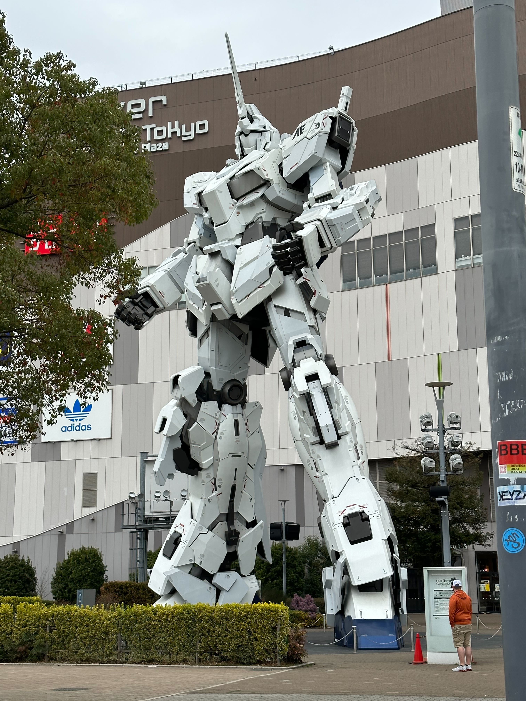

°˖✧✿✧˖° About Japan °˖✧✿✧˖°
Most people in Japan are kind to foriegn guests and get very protective against security. Japanese people have tons of art,and are commited to their religions, every year around new years they go to a shrine, clap twice, ring a bell, throw a coin in a slit, and ask for a wish. It's very famous for it's arcade games, tv shows, and manga, as well as their vending machine -which can heat it or keep it cool- and their food plus drinks are unique to their culture. Japan is also known for its rapid advances in technology and fashion, being one of the most advanced countries in the world.
Nature
ೋღ 🌺 ღೋ
─•~Entry One~•─
Mount Fuji is known as one of the hidden mountains; since its always cold and cloudy, making it rare to see clearly.
ೋღ 🌺 ღೋ
─•~Entry Two~•─
Cherry Blossoms are one of the most famous flowers in Japan, known for only blooming in the spring and summer seasons, in Washington DC there are cherry blossom trees, sent from Japan as a token of friendship with Japan, these trees are so protected you can't even buy one.

ೋღ 🌺 ღೋ
─•~Entry Three~•─
Nara park, located in central Nara is home to hundreds of free roaming deer. The deer are seen as messengers of the gods, known for being a national treasure you can feed these deer just like hundreds of others, the deer also bow when you bow at them.
ೋღ 🌺 ღೋ
>─•~Entry Four~•─
The location is one of many volcanos, where villagers cook eggs until their black and tell you that if you eat one, you can live 5 to 8 years longer.
Food
... ✿°•∘ɷ∘•°✿ ...
─•~Entry Five~•─
ramen started around the 1800's of China. It started with the chinese imagrants in the late 19th or 20th century to Japan after thr Meijiichin restoration in 1868. When arriving in Japan chinatowns with a busy part help spread Ramen's populatity.
... ✿°•∘ɷ∘•°✿ ...
─•~Entry Six~•─
Dango was introduced in 1598 at a huge banquet which is known as the Daigo no Hanami and it was held by the warlod, Toyotomi Hideyoshi. By the middle of the Edo period hanami dango popularity grew plus became viewed as an aspect of spring.
... ✿°•∘ɷ∘•°✿ ...
─•~Entry Seven~•─
Bean Paste was created during the muramachi period *1333-1568* only after the Duch traders began rapedly importing the Sugon to Japan during the Edo period. Around 1603-1868 the Japanese started to use bean paste as desserts in part of a tea ceremony.

... ✿°•∘ɷ∘•°✿ ...
─•~Entry Eight~•─
In the roots of Japanese buns it came from long ago when they were known as manju which was introduced from China. also was pretty cculrural in Japan where as buns were viewed as something similar to bread.
Cultures
... ✿°•∘ɷ∘•°✿ ...
─•~Entry Nine~•─
In Shibuya jingumae is one of the most busy places to be and the most tourist attractions with all the sights to see.
... ✿°•∘ɷ∘•°✿ ...
─•~Entry Ten~•─
Family Mart first opened in 1988 as one of the first convenience stores to be open 24 hours a day which now has 20,000 stores all over japan.
... ✿°•∘ɷ∘•°✿ ...
─•~Entry Eleven~•─
In 1397 the villa was purchased by the yoshimistu from which it was transformed into the kinkaku-ji complex but when Yoshimitsu died his son converted the building into a zen temple according to his wishes.plus the temple was partly made of gold.

... ✿°•∘ɷ∘•°✿ ...
─•~Entry Tweleve~•─
Kyto Tower is one of the tallest structure in Kyto and stands at 430ft. Its used as an observation tower plus hotels near by to stay at to go see the view.

... ✿°•∘ɷ∘•°✿ ...
─•~Entry Thirteen~•─
... ✿°•∘ɷ∘•°✿ ...
─•~Entry Fourteen~•─
These photos are some of the things that are pretty well known in japn for the ai=nime they came from or movies which became pretty popular when it first came out. Such as Totoro/studio Ghibili, pikachu/pokemon and any other form of anime really.


... ✿°•∘ɷ∘•°✿ ...
─•~Entry Fifteen~•─
osoka area is known for how they are merchants or in other words for selling different goods.
... ✿°•∘ɷ∘•°✿ ...
─•~Entry Sixteen~•─
This robot os a gundam which is from an anime but this is a real life version of it which also moves it arms at a certain type of day.
... ✿°•∘ɷ∘•°✿ ...
─•~Entry Seventeen~•─
In japan back then they would have tea time or a session and would have be very respectful to those who pur the tea. People in Japan still to tea time as a part of their mordern life style.
... ✿°•∘ɷ∘•°✿ ...
─•~Entry Eighteen~•─
This is an area of a shrine where you clense yourself before entering a shrine to show respect it basically washing your hands before entering the shrine.
... ✿°•∘ɷ∘•°✿ ...
─•~Entry Nineteen~•─
The Kitsune shrine was built around 711.C.E and grew in size over the years. Plus the Kitsune are very respected for being messangers towards the gods. Then in 1589 the torii gate was created which completed the kitsune shrine.